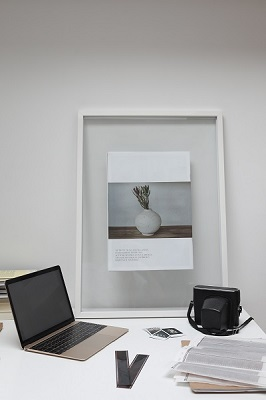
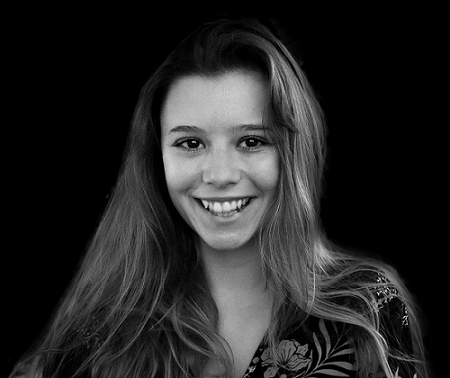
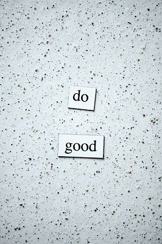

MOI
MOI
Mon Parcours Mes Valeurs
Qui je suis
Je m'appelle Alexia Lussagnet, j'ai 19 ans et je suis étudiante en DUT MMI à Tarbes. Concrètement je fais des études dans la communication, le web, l'audiovisuel et tout ce qui touche au multimédia. J'ai l'occasion d'exprimer ma créativité chaque jour et j'adore les domaines dans lesquels j'évolue chaque jour. J'ai créee Alex'ception en juin 2021 pour pouvoir mettre les savoirs acquis durant ma formation et mon imagination au service de mes clients.
  
Mon parcours
Aujourd'hui mon parcours est encore naissant, vu que je n'ai encore eu le temps d'acquérir une expérience importante ; cependant ma motivation et mon engagement dans le travail compensent mon manque d'expérience. J'ai obtenu un bac Scientifique mention bien en 2020, pour continuer mes études dans les Métiers du Multimédia et de l'Internet. A l'aube de mon passage en deuxième année, je ne peux pas prétendre avoir autant de savoir faire qu'un professionnel mais mes capacités d'apprentissage et mon originalité me permettent de me démarquer. Aujourd'hui Alex'ception a intégré le réseau d'indépendants de Planète Digitale, ainsi je créee des communications digitales pour nos clients, toujours en étroite collaboration avec l'équipe. Cependant j'aimerai aussi pouvoir acquérir des clients de mon côté pour expérimenter de nouveaux projets et enrichir mon expérience.
Mes valeurs
Ambitieuse, motivée, professionnelle, sérieuse, travailleuse et créative sont toutes les qualités sur lesquelles vous pouvez compter. Pour moi, les services que je dois rendre aux gens passent avant tout, et je ne suis satisfaite que lorsque mon travail frôle la perfection. Cependant je ne peux prétendre au fait d'être parfaite car j'ai aussi des défauts. Mais ceux ci ne percent pas dans mon travail. Je saurai être attentive, à l'écoute et déterminée pour vous aider à atteindre vos objectifs et à vous développer, mais toujours de la manière que vous désirez. Néanmoins si vos opinions sont nocives pour le projet, je saurai vous conseiller, et vous diriger vers une voie plus simple pour atteindre nos objectifs. Car vos objectifs deviendront les miens , je me démènerai pour votre projet comme si c'était le mien !